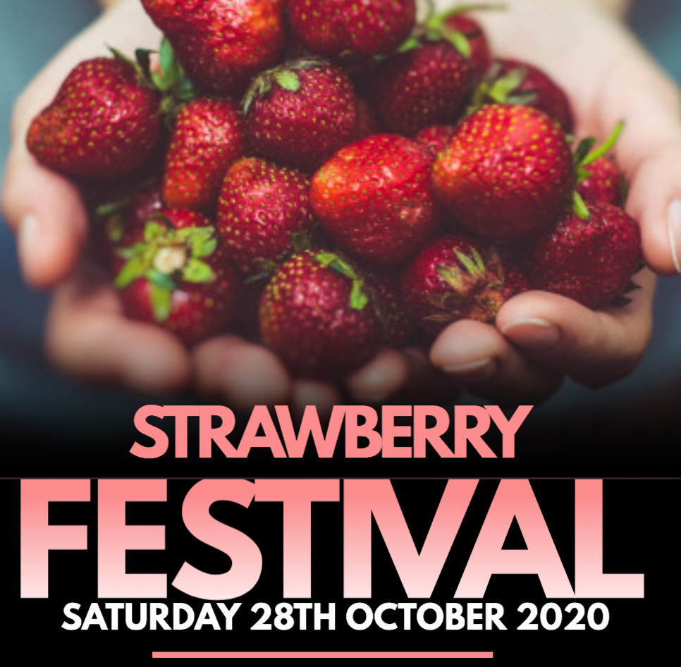

FRUITS SECTION
As fresh as it gets
Special Sale Strawberries:40%
Packed with vitamins, fiber, and particularly high levels of antioxidants known as polyphenols, strawberries are a sodium-free, fat-free, cholesterol-free, low-calorie food. They are among the top 20 fruits in antioxidant capacity and are a good source of manganese and potassium.

Apples (2.99/lbs)

Strawberries (5.99/lbs)

Pineapples (3.99/lbs)